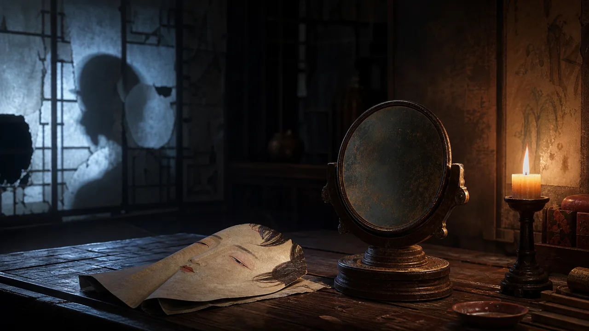

名剑复仇
10 min
干将莫邪：剑、复仇与被记住的名字
《干将莫邪》来自古代志怪与传说系统。它写名剑，也写被权力吞没后仍要传下去的复仇记忆。
搜神记名剑复仇
剑、心、皮相与奇术把不可见的欲望和冤屈变成可见之物。
《干将莫邪》来自古代志怪与传说系统。它写名剑，也写被权力吞没后仍要传下去的复仇记忆。

一个怪诞故事背后的问题很现代：外貌、才情和命运，究竟哪一个构成自我？

从《聊斋志异》的经典篇目出发，读一个关于欲望、伪装和识人迟疑的夜谈。
不是所有夜谈都要吓人。这个故事更像一场街头幻术，也像一则关于吝惜与惊奇的寓言。